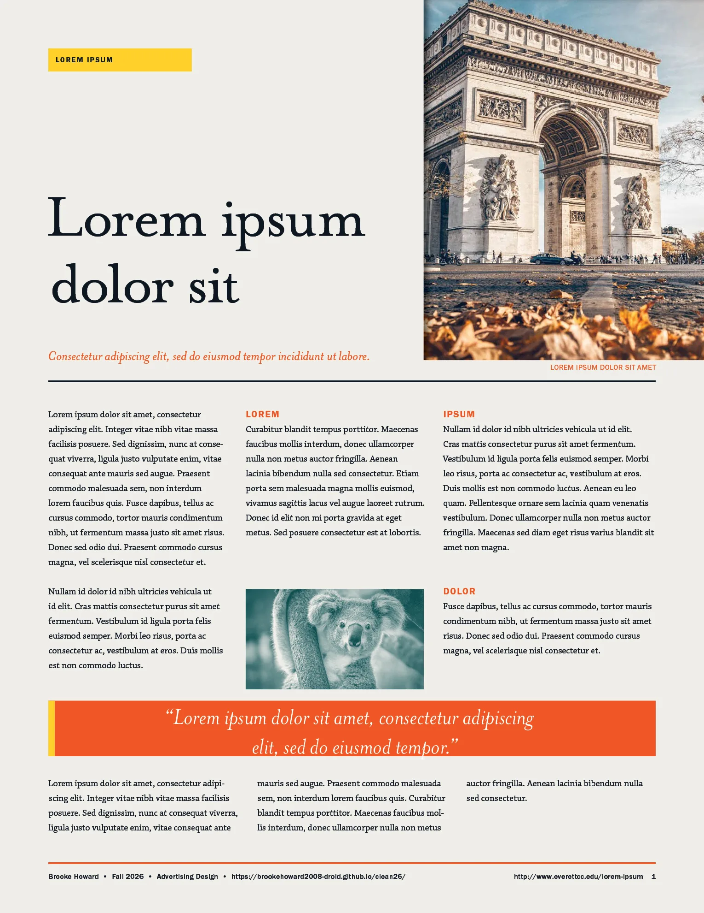
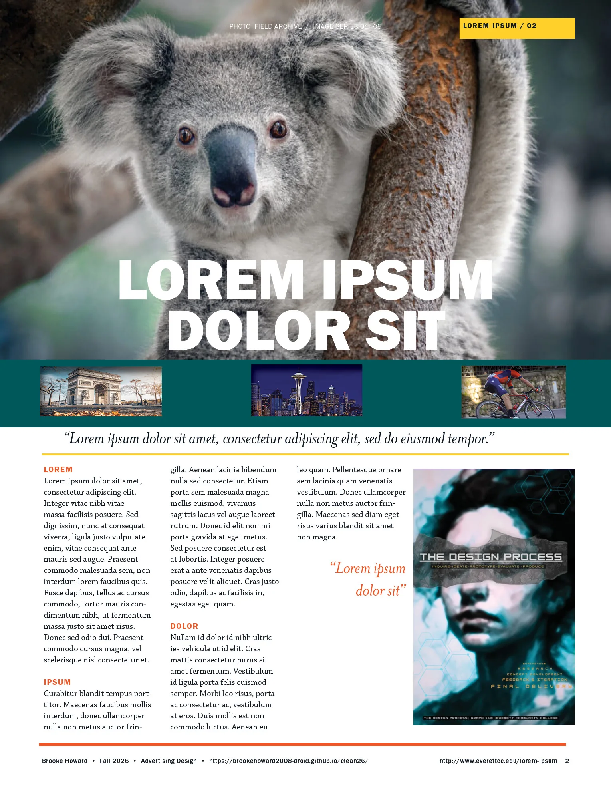
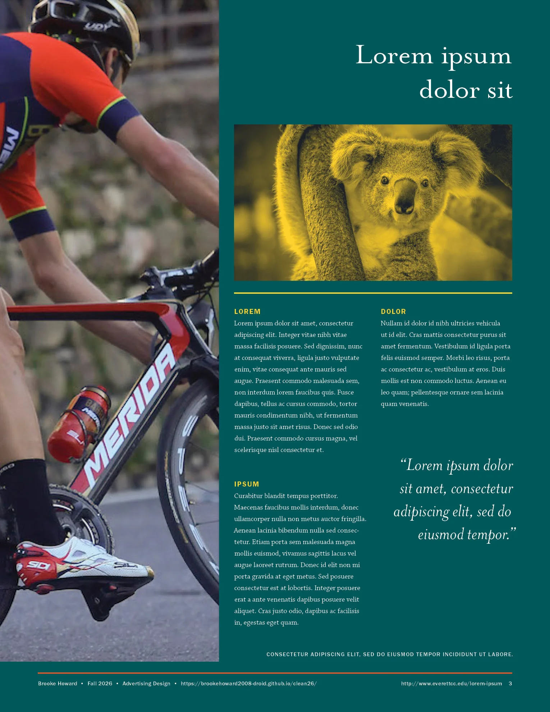
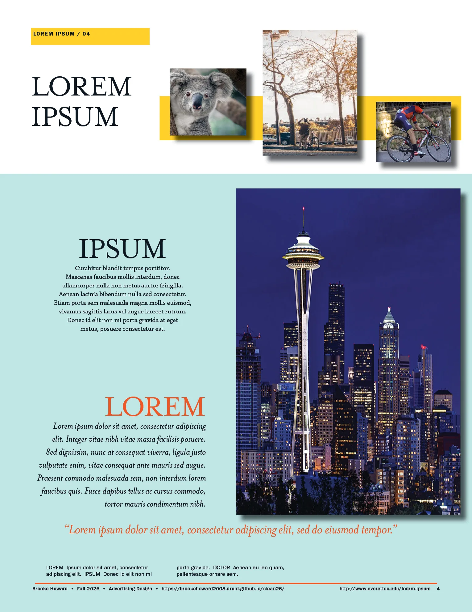

Graph 201 · Advertising Design · Fall 2026
I kept my original four layouts and redid the type, color and photos. Each page has one main photo, the smaller photos are tinted in the page colors, and yellow shows up on every page.

Pink background with a yellow label. The Arc de Triomphe photo runs off the top and right edges, the koala photo is tinted teal and pink, and the long quote is white on an orange bar.

The koala photo fills the top with the headline centered over it. A dark teal band holds the big yellow quote, with three columns of text below.

Dark teal background. A tall, close crop of the cyclist runs down the left side, the koala photo is tinted yellow, and the title and pull quote are right aligned.

Light teal background. The three small photos are tinted teal on a yellow bar, and the Seattle photo is larger and runs off the right edge next to the text.